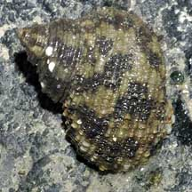
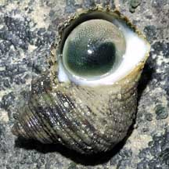

|
|
| shelled snails text index | photo index |
| Phylum Mollusca > Class Gastropoda > Family Turbinidae |
| Dwarf
turban snail Turbo bruneus* Family Turbinidae updated Sep 2020 Where seen? This large turban snail is sometimes seen on our rocky shores. It is also sometimes called the Brown turban snail and the scientific name is sometimes spelt as Turbo brunneus. Features: 3-5cm. Shell thick with spiral cords made up of tiny scales which feel rough. Chalky operculum is hemi-spherical with many tiny bumps, dark green with greyish and white margins. Body with brown mottles, a pair of slender tentacles. Sometimes confused with the Top shell snail (Family Trochidae) has a more pyramidal shell and a thin operculum made of a horn-like material. While the turban shell snail has a shell with more distinct whorls and a thick, chalky operculum. Here's more on how to tell apart turban and top shell snails. |
 Pulau Hantu, Feb 08 |
 |
 Many tiny bumps on the operculum. |
| Dwarf turban snails on Singapore shores |
On wildsingapore
flickr
|
| Other sightings on Singapore shores |
| Acknowlegement With grateful thanks to Tan Siong Kiat of the Raffles Museum of Biodiversity Research for identifying this snail. Links
References
|